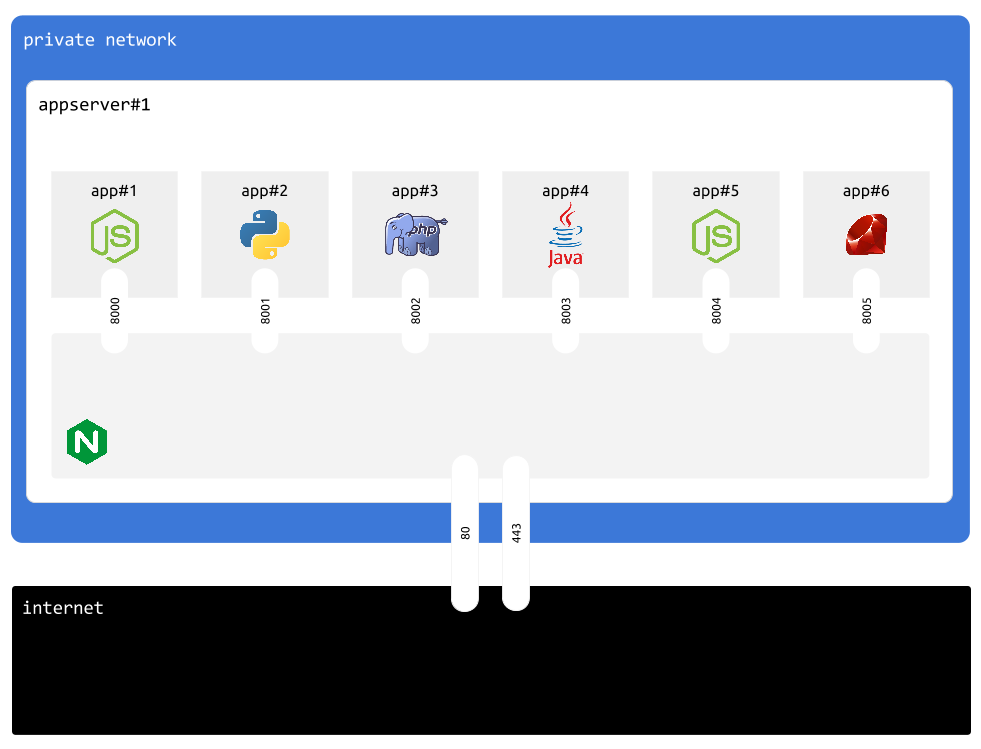

Intro
Application server is a server type that will let us run applications inside docker containers.
Unused port is automaticaly assigned to each container to route HTTP traffic.
Nginx is listening on ports 80 and 443.
In the example below, organisation has 6 apps and 1 appserver instance

Design decisions
Docker
One appserver instance runs multiple apps, each app has its own docker container
Multiple appserver instances inside same organisation will run, the exact same set of apps
Application state
Each application is stateless. We consider that you must NOT use your application server's disk to store app state
Instead, you can use databases, file servers and services like AWS S3
Please check guides on mongodb and mysql to understand how cmdcenter manages databases
Stateless approcoah also helps to horizontaly scale your apps, by adding or removing appserver instances at will.
Create new instance
Assuming that:
- your organisation name is:
myorg - public IP of your server is:
aaa.aaa.aaa.aaa - private IP of your server is:
bbb.bbb.bbb.bbb
cmdcenter.py create instance --pubip aaa.aaa.aaa.aaa --privip bbb.bbb.bbb.bbb --desc "note" appserver --org myorg
Running this command will add new entry into instances.json file in myorg/servers/appserver folder
Instances file
instances.json contains list of every appserver instance available in current organisation
[
{
"publicIP": "aaa.aaa.aaa.aaa",
"description": "note",
"role": "default",
"name": "appserver_o6hbh",
"privateIP": "bbb.bbb.bbb.bbb"
}
]
each instance has following fields:
| Field | Meaning |
|---|---|
| publicIP | Public IP address of this server |
| privateIP | IP address of this server on the private network |
| name | unique instance name |
| role | always default |
| description | optional text to describe this instance |
Credentials file
Instances are automatically configured to use sshkeys as ssh auth mecanism.
However, users still require passwords to perform system administrator operations
Assuming that your organisation name is: myorg, username and password of sudo capable user is stored in myorg/servers/appserver/access.ini file:
[sudouser]
username=randomsudousername
password=RaNd0mP@5SW0rD
Apply configuration (1/2)
First configuration step connects as root and creates sudo capable user using access.ini configuration.
Usualy you only run this command once, or/and everytime you add new appserver instance to your organisation.
cmdcenter.py setup server --step 1 appserver --org myorg
Apply configuration (2/2)
Second configuration step connects as sudo capable user and installs minimum viable software:
- docker
- git
- nginx
- fail2ban
It also copies configutation files
cmdcenter.py setup server --step 2 appserver --org myorg
Show servers
You can use following command to show servers in your organisation
cmdcenter.py show servers --org myorg
Here is a list of server groups i found in "myorg" organisation:
appserver
appserver_5davo :: default :: appserver 01
publicIP : aaa.aaa.aaa.aaa
privateIP : bbb.bbb.bbb.bbb
mysql5server
mysql5server_3mqdG :: default :: main mysql5server
publicIP : ccc.ccc.ccc.ccc
privateIP : ddd.ddd.ddd.ddd
mongo3server
mongo3server_lEdlj :: default :: main mongo3server
publicIP : eee.eee.eee.eee
privateIP : fff.fff.fff.fff
SSH
You can SSH to any server appserver instance.
Here is a command to lisy your SSH options for myorg organisation
cmdcenter.py ssh appserver --org myorg
USAGE: cmdcenter.py ssh SERVERGROUP USERNAME HOSTNAME
Here is a list of servers you can SSH:
cmdcenter.py ssh appserver randomsudousername aaa.aaa.aaa.aaa --org myorg
cmdcenter.py ssh appserver root aaa.aaa.aaa.aaa --org myorg
cmdcenter.py ssh mysql5server randomsudousername ccc.ccc.ccc.ccc --org myorg
cmdcenter.py ssh mysql5server root ccc.ccc.ccc.ccc --org myorg
cmdcenter.py ssh mongo3server randomsudousername eee.eee.eee.eee --org myorg
cmdcenter.py ssh mongo3server root eee.eee.eee.eee --org myorg
Then, simply pick an instance and user to SSH
cmdcenter.py ssh appserver root aaa.aaa.aaa.aaa --org myorg
You do not need to enter passwords, these are automatically picked up from your access.ini config files in combination with ssh keys.